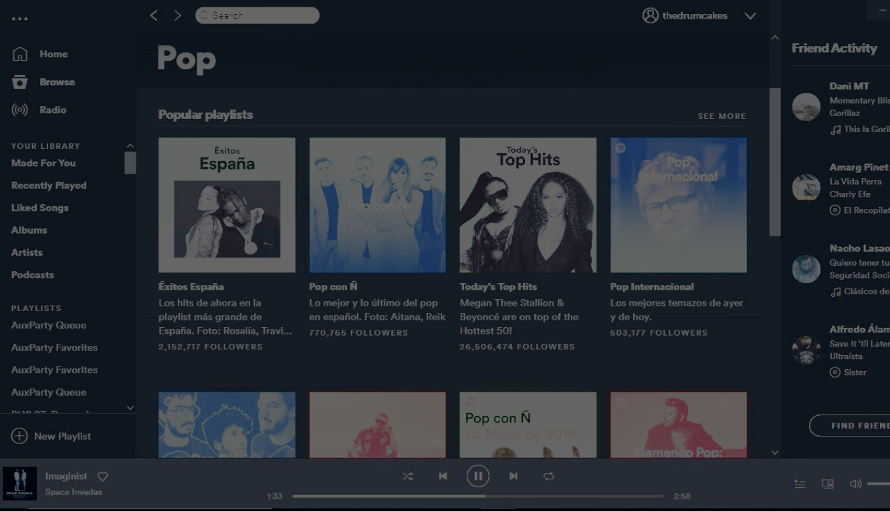

Dreams and hopes
Let's do this!
Whaaaat...?
Nerds :)
Aereum
Make the internet fun again
free, fair, fresh, fly
2.

blabla
2.
Content sharing on a
protocol
, free from a single app / provider interface
And that’s because we are people...
...speak
...share
and people talk...
teach and learn.
...exchange
People create
We are crypto enthusiasts that, in the spirit of Satoshi Nakamoto, believe in
freeing digital interactions
from third parties interface dependency
We propose a new digital agreement so that people can
interact freely
, no single provider in charge of content distribution and format
We have a functioning network built on top of that agreement, the first decentralized crypto powered
digital venue for people
Aereum hopes to bring back
human values and independence
to digital interfaces,
setting people free
to pour innovation, personality and experimentation into their interactions
1
Interfaces are
not
neutral
The character of an interaction is always heavily altered by the interface.
Some interfaces promote
uniformity
and encourage familiar, popular choices...
...
lacking
in warmth and human exchange
While others encourage
diversity, connection
, people’s
curiosity and experimentation
Shouldn't digital music discovery be at least as surprising and varied as in a record store, garage bands and underground singers found by chance, maybe pointed out by a bypasser? Unexpected choices leading to unexpected experiences! And so with movies, photography, literature...
How can these seem somehow less varied
, colourfull and diverse today, despite the amazing reach rendered by the digital medium? Interfaces.
We must
reclaim interfaces
to reclaim human values lost, depreciated and forgotten by the digital environment.
Under no circumstances should digital interfaces be inferior to their analog counterparts
, however convenient these interfaces may become!
2
Content
over form
Content should not adjust to fit a format. It must be the other way around. So we propose content exchange through a protocol. :)
Content sharing adjusted to
app /provider
frame
Content sharing on a
protocol
, free from a single app / provider interface
Long ago people came up with a protocol to make machines communicate with each other. On top of that the internet was born.
Aereum proposes a protocol to make humans digitally communicate with each other
, no intermediary plataform needed. Ideas free from the dictatorship of provider’s formats.
Content is yours to decide
how
to share it and whom to share it with! Your ideas, your choices!
3
Digital stages
of a global festival
Aereum protocol enpowers you to take a stage online and be seen by everyone that matters to you, without the need for the intermediary plataforms.
Today we
stumble and adapt
to find the right place to interact with our audiences
And that’s because we are people...
and people talk...
...speak
...share
...teach and learn
...exchange
We should have it all in
one single digital venue
. Why not?
When freed from the prision of preset interfaces
, interactions may take all and any shapes, audiences flexible to follow the contents they’d like better.
Stages are the analog image that inspired Aereum’s digital exchange medium
. They are
native and neutral
human interaction grounds, flexible to embrace most types of human interactions.
People
create
The protocol enpowers you
to take your stage online and be seen by the audience that chose to follow you without the intermediary to dictate rules for content format and distribution. Without having to adapt your interaction to your interface!
Let's do this!
A set of rules agreed upon by different participants of a network to ensure direct digital communication. That’s the
protocol
, Aereum’s protocol .
Maybe a story can do a better work at explaining...
Outline
Aereum is a
protocol
designed to enable mediation-free communication on the web, that is, direct digital interaction between humans. The guidelines presented by the protocol rely both on known
cryptography
technics, and an original proof-of-stake
consensus algorithm
with
state
checksum check.
On top of the protocol the eponymous peer-to-peer Aereum
network
is proposed, comprising unique identification handles for
members
and a cryptography powered communication layer inspired by the concept of
stages
. A secure channel mechanism is also provided, supported by
ephemeral tokens
.
The processing of network
instructions
into
blocks
for incorporation into the public chain is moderated by a dedicated
fungible token
.
[1] protocol
Direct digital interaction between humans is possible if both a public identification mechanism for members, and a decentralized communication mean are provided.
Aereum proposes that members are uniquely identified by the public key of an asymmetric cryptographic pair, and a unique handle "@user_name". Valid
cryptographic
signature checked against the public key is considered proof of authorship.
For direct communication exchange it proposes the sending of messages to a decentralized blockchain. Content access is managed by encrypting the message with a cipher formerly associated to a digital
stage
.
The protocol covers a range of types of interactions translated into a set of possible
instructions
. In addition to the sending of messages, it encompasses creation of stages, granting of reading, writing and moderation priviledges for a stage, waivering and annulment of signature priviledges (so-called power of attorney), creation of a secure channel between members, shuffle of keys for stage managing, and sponsorship proposals and acceptances.
[2] network
Aereum network runs on top of its namasaked protocol, enabling the use of the Aereum protocol by the participants. To meet communication needs, it must be a high throughput, low latency, cheap and reliable network.
The
consensus algorithm
proposed is scalable to the order of dozens of instructions per day, per member, globally. The cost estimate is of the order of US$ 1 cent per thousand instructions processed.
Network recieves new instructions sent by any member and orders such instructions into
blocks
that will be posteriorly incorporated into the blockchain. Instruction incorporation and
state
update consist in checking signatures, sufficiency of
fungible token
balance on the appropriated wallets, overall wallet balances, members tokens and handles, stages tokens, sponsorship proposals and power of attorney priviledges. The last two items are explained in the
instructions
section.
For node synchronisation new candidates stake a predetermined amount of the network's fungible token and then connect to an existing node to recieve the current state. After transfer, if the state is correct, candidates can validate new nodes. Every node is required to publish a proof of state checksum to all peers on a regular basis. Only nodes providing the correct proof remain valid, until next check, and so on.
[3] cryptography
Cryptography technics adopted by the protocol and network.
Hash function: SHA256 hash algorithm as defined in FIPS-180-4. Used in the
state
checksum processing.
Symmetric Cryptography: AEAD cipher mode based on AES-256 encryption. Used for encryption of content published to the blockchain according to Aereum's
stage
mechanism.
Asymmetric Cryptography: ED25519 signature algorithm based on RFC 8032 (https://ed25519.cr.yp.to/). Used for network's
member
identification, for managing priviledges regarding
stage's
actions and for
secure channel
communication.
Diffie-Hellman secret exchange: X25519 function defined on RFC 7748. The function can either be called on persistent public keys or ephemeral ones. Used to exchange
stage's
keys for content access, and for moderation or writing privileges.
[4] members
New participants must generate an asymmetric
cryptographic
pair of keys. To join the
network
, the member must send a message to a validator node containing: the public key token of the generated pair, an unused handler caption and a JSON with the member's information.
The JSON file can contain a name, a signed certificate of authenticity and links for static off-chain storage of files. These information can be later altered. Message size accepted by network prevents exchange of large content files, so static links can be referred to by an html hook, pointing to the place these files are stored by a third-party service, or self-hosted.
Since all
instructions
need a wallet with the necessary
fungible token
balance to be processed by the network, if the new member does not possesses an aero wallet they must find someone willing to afford the "join network" message.
[5] stages
Content access is managed by message encryption, using a mechanism methaphorically referred to as stage (as a reference to its real-life counterpart).
To create a stage the member must generate three asymmetric cryptographic key pairs and one symmetric key. Each of the three public keys will be respectively associated with the stage's ownership, moderation and writing priviledges. The cipher will be used for content encryption and shared to allow for reading priviledges.
All content published to the network must be assigned to a previously created stage. If the stage creator wishes to grant reading, moderation or writing privileges to a requester, the respective cryptographic key will be exchanged using the
Diffie-Hellman
algorithm.
[6] ephemeral tokens
To provide a primitive for secure communication within the network, the protocol proposes an instruction for the creation of an ehphemeral token. It provides a transient token, the only type of token with permission to sign messages anonymously.
The ephemeral token created will be valid for a finite number of blocks. Through anonymously signed messages two members can negotiate ephemeral keys and then interact anonymously within the network for some time.
Anonymity is guaranteed up to the anonymity of the wallets used for payment of the instructions
fees
.
[7] fungible token
As a reward to
network
nodes for the processing, validating and broadcasting of information, the protocol proposes a dedicated fungible token, aero. Aero tokens are created at every new block incorporation to the blockchain.
To inhibit spams, robots and to protect the network from hoarding of simpler
handles
, all instructions sent to the network require an amount of aero to be waived by the sender. This fee is also granted to network nodes.
[8] instructions
Join Network: Includes a new member to the network, assigning a unique handle to its public key
Update Info: Updates the static information of a network member with a new JSON file
Create Stage: Creates a stage with its assigned public key and a description
Join Stage: A member requests to become part of an existing stage with the priviledges they'd like to have (read, write, moderate)
Accept Join/Moderate/Write Request: Stage owner accepts the request of another member to access/moderate/post content on the referred stage
Content: Publishes content to a target existing stage, must be signed with writing key of referred stage
Shuffle Audience Keys: Changes an existing stage access, moderation and writing keys
Grant Power of Attorney: Grants another member the power to sign instructions on behalf of the author
Revoke Power of Attorney: Removes a power of attorney granted by a member
Sponsorship Offer: Sponsored content message to be published to a target stage
Sponsorship Acceptance: Accepts the Sponsorship Offer message
Create Ephemeral Token: Creates transient tokens to provide anonymous communication
Secure Channel: Creates a secure channel for communication between members
[9] consensus algorithm
To balance network requirements, the protocol proposes an original proof-of-stake with state checksum as its consensus algorithm. The validating nodes need only to keep record of the
network state
in order to validate new instructions.
An elected node checks the new instructions received against protocol requirements and groups them into a block. The block must be signed by a subset of the remaining nodes from the validating pool.
If 2/3 of all signing nodes agree on the newly created block, it is considered definitive and broadcast to interest parties. Nodes are rewarded with newly minted aero and fee collection.
[10] blocks
The network nodes, already
state
syncronized, receive new instructions that must be ordered into blocks such that no single instruction is duplicated and all instructions of a new block are compatible with the set of instructions in prior blocks.
New blocks can be started without having the information about previous block, the specific block from which it is being validated being thus specified. This specific block is required to be a live checkpoint.
The vast majority of honest signing members of the network should agree on the content of a new proposed block before it is incorporated by the blockchain.
[11] network state
At any block the state of the network is given by:
⦁ balances of all wallets with non-zero aero
⦁ tokens and respectively assigned handles for all members
⦁ current ownership, moderation and writing tokens for all stages
⦁ non-expired and non-exercised sponsorship offers
⦁ valid power of attorney grants
Candidate nodes must syncronize the network state, not entire blockchain. To ensure state syncronization, nodes must periodically publish a proof of correct checksum for the current state in order to remain in the validating pool.